THIS IS WHERE
YOU GET
FUCKED
OR STABBED.
Sometimes both.
The Neon Gut is the vertical underbelly of Saint Jude's Landing. Commerce, entertainment, smuggling, cheap housing, street economies, illegal businesses, shitty clubs, dive bars, 24-hour convenience stores, and enough noise to make silence feel suspicious.
It's crowded. It's filthy. It's loud as hell. People live here anyway.
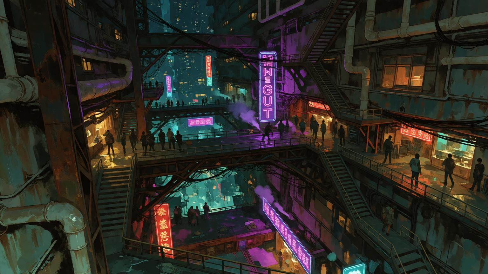
01 / OUTSIDE
LOUD.
WET.
ALIVE.
Black rainwater runs through cracked pavement under signs that have been flickering for so long nobody remembers what they were supposed to look like.
Burnt electronics. Street food. Sirens. Illegal-club bass. Cigarette smoke. Cheap perfume. Wet concrete. People yelling across the street because apparently that is how conversations work here.
The Gut isn't clean, and it sure as fuck isn't futuristic. Most of the technology is old, repaired badly, modified beyond recognition, or being held together by somebody who absolutely should not have been trusted with a screwdriver.
THE LIGHT IS NEWER THAN THE BUILDINGS.
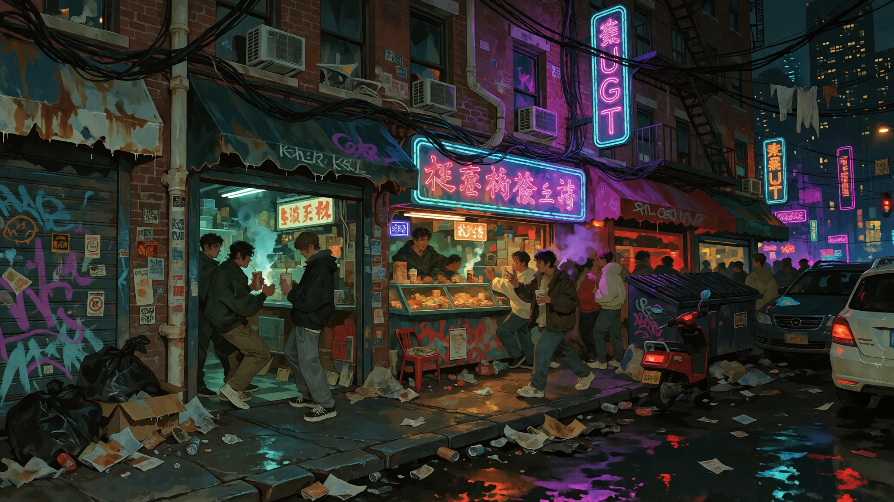
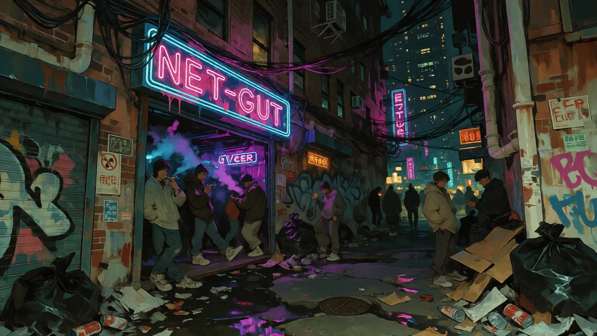
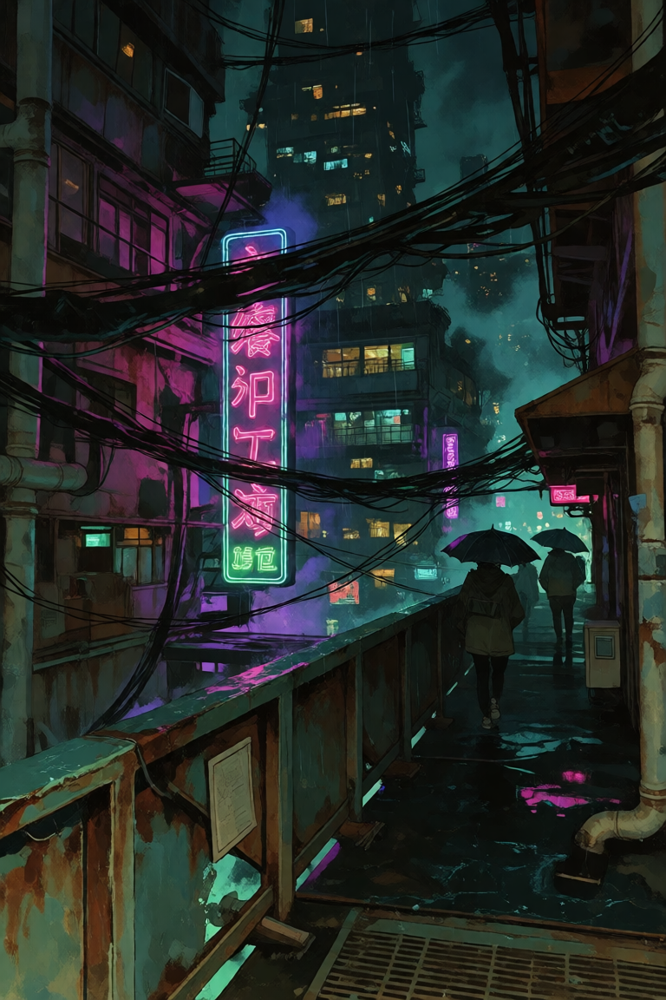
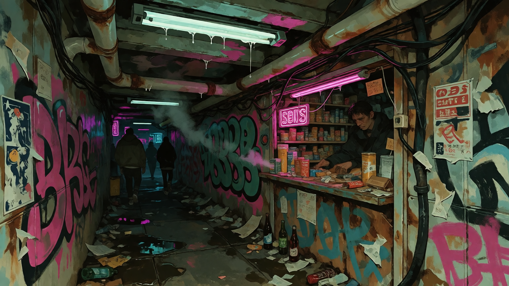
ACTUALLY IMPORTANT
PEOPLE LIVE
HERE.
People work here. People raise children here. People buy groceries here. People get coffee before work. People complain about rent. People have neighbors they hate. People have favorite restaurants. People know which convenience store sells the good shit.
There are smugglers and adrenaline junkies and illegal businesses, sure, but there are also people who have lived in the same apartment for thirty years and mostly want the upstairs neighbor to stop stomping around at midnight.
The supernatural bullshit doesn't erase ordinary life. It just gets incorporated into it.
Someone still has to buy groceries.
OPEN 24 HOURS
SOMEONE'S
ALWAYS
OPEN.
There is always somewhere to buy food, cigarettes, batteries, bootleg electronics, questionable medicine, a phone charger, or something that was definitely not manufactured for human consumption.
Nobody remembers when the first 24-hour stores showed up. Nobody wants the answer badly enough to research it.
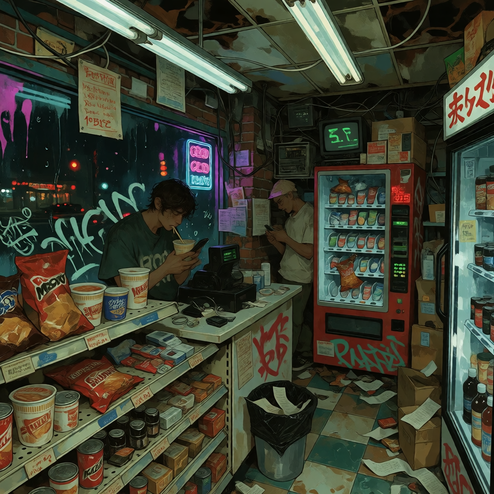
02 / AFTER DARK
NOBODY
GOES
HOME.
Not at a reasonable hour, anyway.
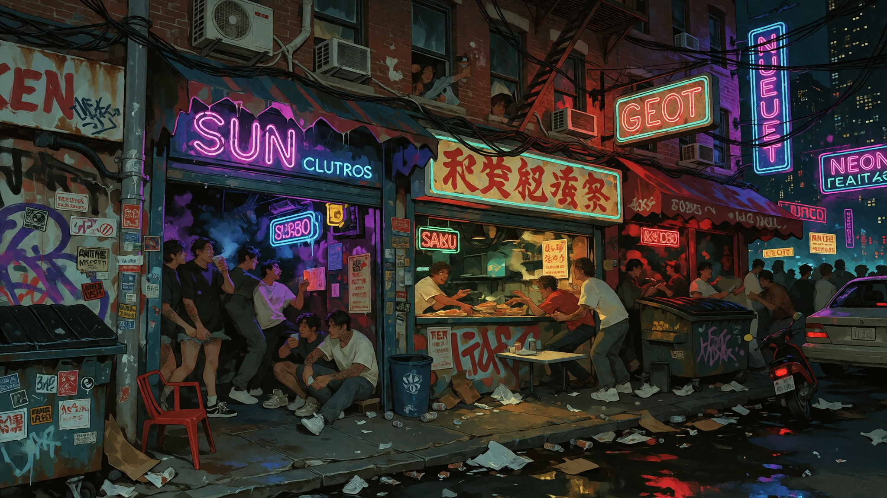
- Shitty clubs
- Dive bars
- Illegal clubs
- Street food
- Underground parties
- Smugglers
- Adrenaline junkies
- People who should have gone home three hours ago
- People who never intended to go home
The Gut's nightlife isn't glamorous. It's sticky floors, condensation, broken bathroom locks, cheap drinks, overheated rooms, cigarette residue, bass through the walls, and somebody screaming outside because somebody else stole somebody else's jacket.
Somebody is always meeting somebody. Somebody is always selling something. Somebody is always looking for somewhere to keep the night going.
IT IS A VERY GOOD PLACE TO MAKE BAD DECISIONS.
YEAH, THIS HAPPENS
SOMETIMES
REALITY
SKIPS.
The Neon Gut has a particular relationship with glitch-horror. Reality stutters. Static-like creatures show up where they shouldn't. Vending machines become hostile. Objects repeat. Things move a fraction of a second before they actually move.
Most people have a preferred method for dealing with this.
MINE IS IGNORING IT.
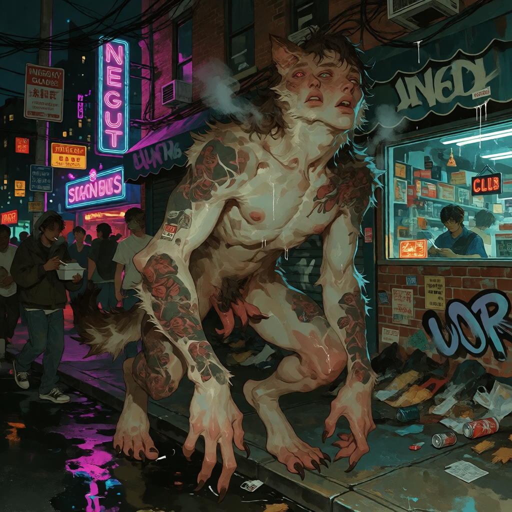
03 / KEEP GOING DOWN
YOU THOUGHT
THAT WAS
THE BOTTOM?
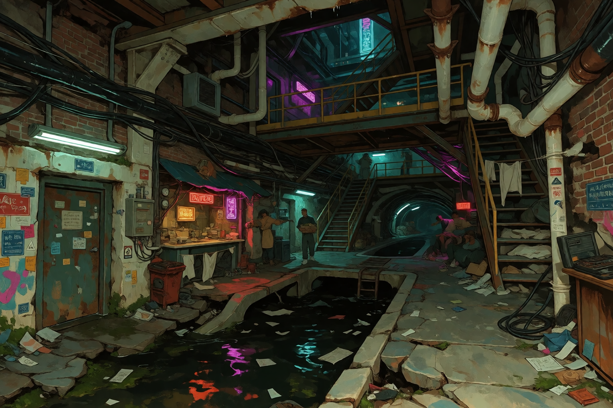
The Neon Gut keeps going down.
Utility tunnels, old foundations, drainage, maintenance walkways, pipes, buried infrastructure, illegal businesses, improvised housing, storage rooms, forgotten staircases, and spaces that were never meant to become places people actually use.
Naturally, people use them.
That's basically how Saint Jude's Landing works.
THE CITY BUILT DOWN. PEOPLE FOLLOWED.
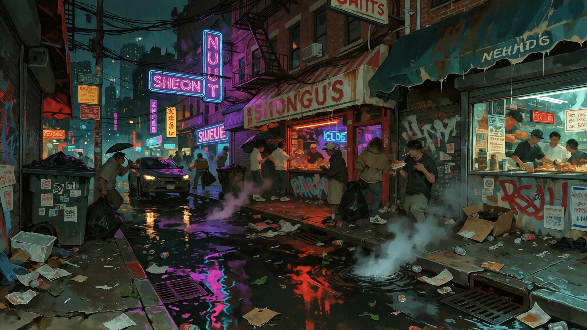
PEOPLE WHO KEEP SHOWING UP
GUT ORIGINS.
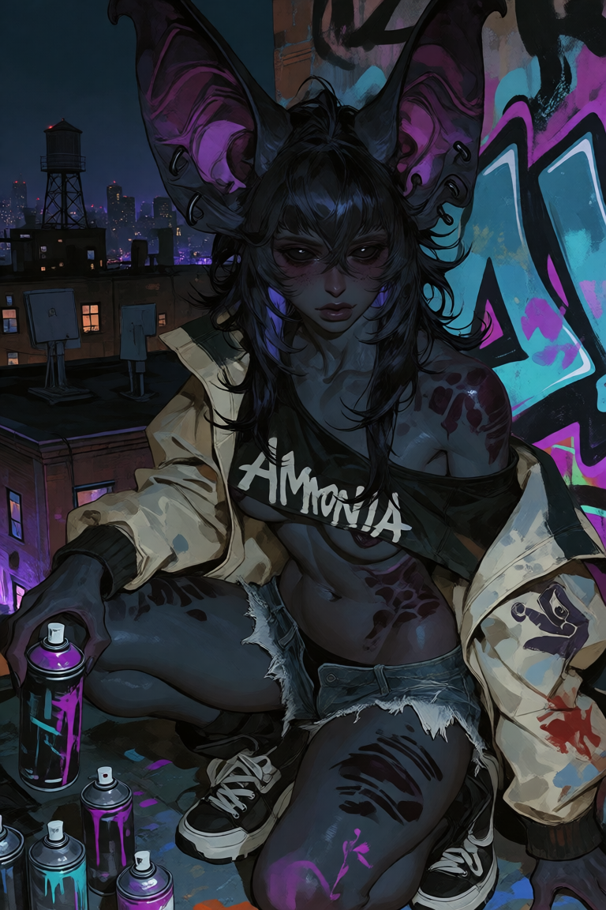
AMMONIA
Legendary graffiti artist. Bat demi-human. Travels throughout Saint Jude's Landing. Started the Outliers.
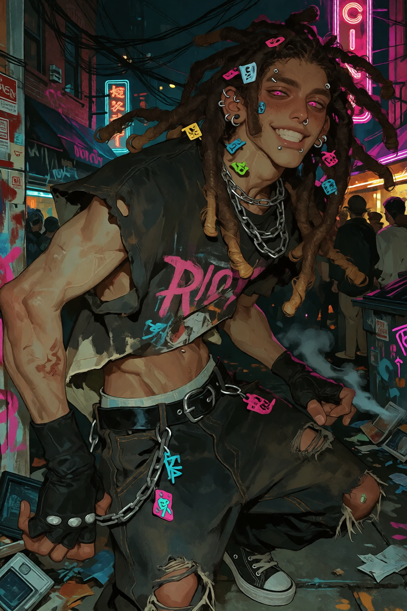
RIOT
Stimulation-seeking, trouble-finding, adrenaline-addicted. If nothing is happening, he will find something.
COMING
MOLD
Tiny trash gremlin. Survives. Loves stimulation. Probably asleep in a dumpster.
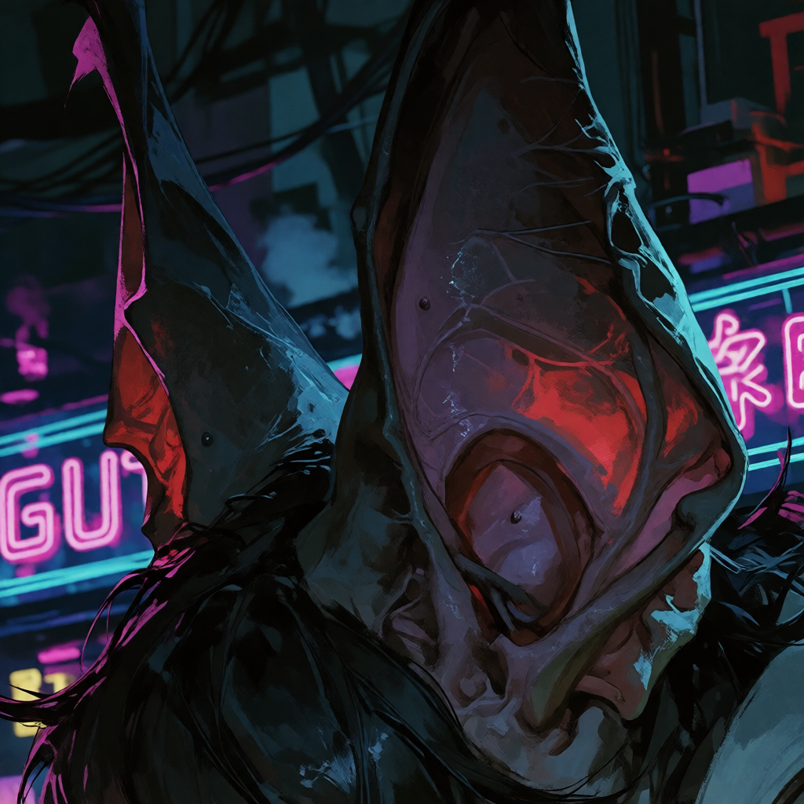
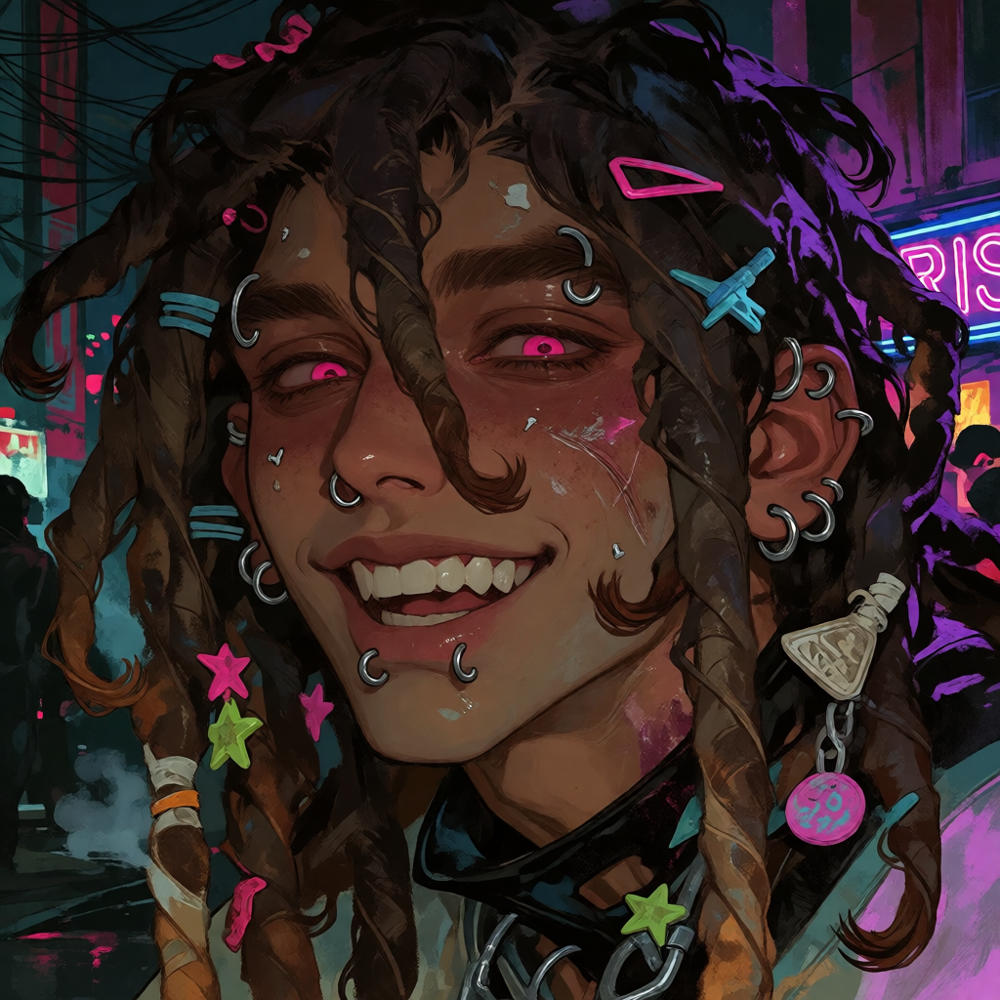
LOCAL SOUND / DON'T PLAY QUIETLY
THE GUT
HAS
NO VOLUME.
There is always something playing somewhere.
Not an official soundtrack. Just the general problem.